ClinicusMed · Atlas Histológico + Banco de Questões
O sistema linfático é a contraparte morfológica do sistema imunitário — um conjunto de células, tecidos e órgãos que vigiam as superfícies corporais e os compartimentos internos do corpo.
A maioria das células imunitárias deriva de células-tronco hematopoiéticas, seguindo duas linhagens: mieloide e linfoide.
| Grupo | Células |
|---|---|
| Linfócitos | Linfócitos T, Linfócitos B, Células NK (Natural Killer) |
| Células de sustentação | Monócitos, macrófagos, neutrófilos, basófilos, mastócitos, eosinófilos, células reticulares |
| Células apresentadoras de antígeno (APC) | Células dendríticas, células de Langerhans, células reticulares foliculares, células epiteliorreticulares (timo) |
| Tipo | Características | Componentes |
|---|---|---|
| Inata (inespecífica) | 1ª linha de defesa. NÃO possui memória imunológica | Pele, mucosas, pH gástrico, lisozimas (lágrima/saliva), neutrófilos, macrófagos, células NK, eosinófilos, basófilos, citocinas |
| Adaptativa (específica) | 2ª linha de defesa. Linfócitos dão especificidade e memória imunológica | Humoral (linfócitos B → anticorpos) e Celular (linfócitos T → identificação de célula transformada) |
| Termo | Definição |
|---|---|
| Antígeno (imunógeno) | Toda substância estranha ao organismo que desencadeia a produção de anticorpos |
| Anticorpo | Proteína produzida pelos plasmócitos, em reação à entrada de antígenos no organismo |
| Ig | Características |
|---|---|
| IgM | Primeira imunoglobulina produzida. Indica infecção recente/fase aguda (resposta primária) |
| IgG | Imunidade passiva do feto (atravessa a placenta). Neutraliza toxinas e vírus. Indica infecção passada, vacinação e memória imunológica |
| IgA | Presente nas secreções mucosas — 1ª linha de defesa em mucosas. Neutraliza patógenos antes de entrarem no organismo. Transmitida pela amamentação |
| IgE | Ligada a mastócitos e basófilos. Participa de reações alérgicas imediatas. Defesa contra parasitas helmintos |
| IgD | Receptor de antígeno na superfície de linfócitos B imaturos. Participa da ativação inicial do linfócito B |
| Célula | Onde matura | % circulante | Função |
|---|---|---|---|
| Linfócito T CD4+ (Helper) | Timo | 60–80% (T) | TH1: controle de patógenos intracelulares. TH2: controle de patógenos extracelulares. Ativa linfócitos B e macrófagos |
| Linfócito T CD8+ (Citotóxico) | Timo | Mata células-alvo transformadas (reconhece MHC I) | |
| Linfócito T Regulador | Timo | Regula outros linfócitos, mantém autotolerância a antígenos próprios | |
| Linfócito T gama/delta | Timo | 1ª linha de defesa em tecido epitelial (interno e externo) | |
| Linfócito B | Medula óssea | 20–30% | Diferencia-se em plasmócitos → produção de anticorpos (Ig) circulantes |
| Linfócito NK | Medula óssea | 5–10% | Mata células-alvo transformadas por liberação de fragmentinas (perfurinas) → apoptose |
| Tipo | Características |
|---|---|
| Difuso | NÃO encapsulado. Encontrado nas mucosas (tecido linfático associado à mucosa) |
| Nodular (nódulos/folículos) | Agregados esféricos de linfócitos. Primário: sem centro germinativo. Secundário: com centro germinativo (proliferação de linfócitos B) |
Siglas do tecido linfático associado a mucosas (MALT):
| Sigla | Localização |
|---|---|
| GALT | Trato gastrointestinal, amígdalas, apêndice, adenoides, placas de Peyer |
| BALT | Brônquios e pulmões |
| MALT | Termo geral — inclui GALT e BALT — geniturinário também |
| SALT | Pele |
| Tipo | Órgãos | Função |
|---|---|---|
| Primários | Medula óssea vermelha, Timo (+ fígado fetal) | Origem e maturação inicial dos linfócitos (B na medula, T no timo) |
| Secundários | Gânglios linfáticos, Baço, Amígdalas, MALT | Sítio onde os linfócitos maduros encontram antígenos e são ativados |
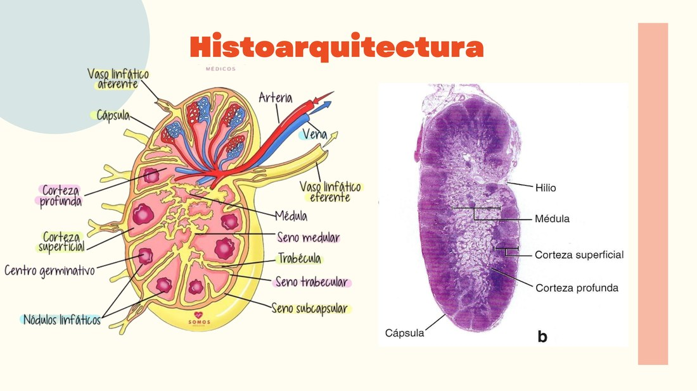
| Elemento | Descrição |
|---|---|
| Cápsula | Tecido conjuntivo denso não modelado (TCDNM) que envolve o órgão |
| Trabéculas | TCDNM que se estende da cápsula até o parênquima |
| Tecido reticular | Células e fibras reticulares que formam uma malha de sustentação (inclui células reticulares, dendríticas, macrófagos, célula dendrítica folicular) |
| Vasos linfáticos aferentes | Trazem a linfa para dentro do gânglio, penetrando em vários pontos da superfície convexa da cápsula |
| Vasos linfáticos eferentes | Levam a linfa pra fora do gânglio, na altura do hilo (depressão na superfície côncava) |
| Córtex superficial | Contém nódulos linfáticos (folículos) com linfócitos B, muitos com centro germinativo |
| Paracórtex (córtex profundo) | Rico em linfócitos T dispersos (difusos) |
| Medula | Contém cordões medulares (linfócitos, macrófagos, plasmócitos) e seios medulares |
| Seios (subcapsular, trabecular, medular) | Espaços por onde a linfa circula dentro do gânglio |
| Elemento | Descrição |
|---|---|
| Organização geral | 2 lóbulos divididos, por trabéculas, em lobulillos (lóbulos menores) |
| Córtex | Rico em linfócitos T em desenvolvimento (timócitos), em meio a células epiteliorreticulares (tipo I, II e III). Também tem macrófagos (células PAS+) |
| Medula | Possui células epiteliorreticulares tipo IV, V e VI. As do tipo VI formam os Corpúsculos de Hassall |
| Corpúsculos de Hassall | EXCLUSIVOS do timo — ajudam na maturação dos linfócitos T, produzem linfopoyetina |
| Barreira hematotímica | Protege os linfócitos em desenvolvimento (no córtex) da exposição a antígenos circulantes |
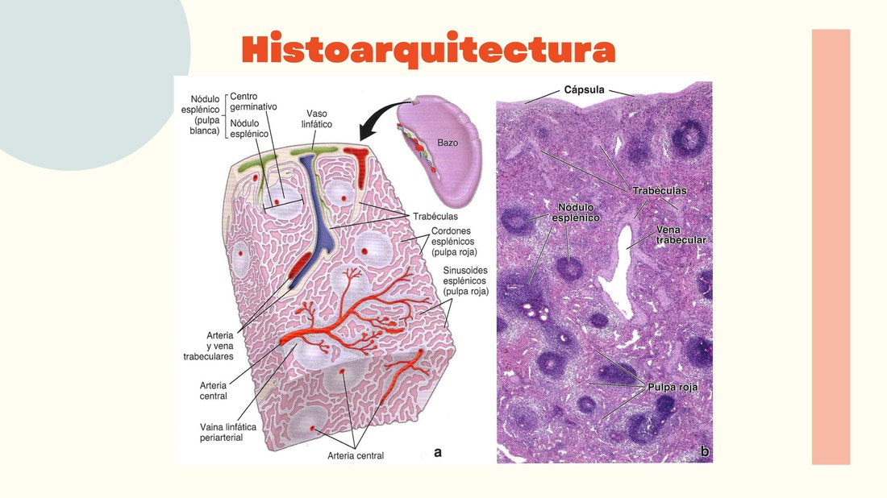
| Elemento | Descrição |
|---|---|
| Cápsula + trabéculas | Tecido conjuntivo que penetra no parênquima (pode conter miofibroblastos) |
| Polpa branca (nódulo esplênico) | Densa acumulação de linfócitos ao redor de uma artéria central — a Vaina Linfática Periarterial (VLPA). Cor mais forte na lâmina |
| Polpa vermelha | Contém os eritrócitos que filtra e degrada (hemocaterese). Cor mais clara na lâmina |
| Cordões esplênicos (de Billroth) | Parte da polpa vermelha — coloração mais clara/branca na lâmina |
| Sinusoides esplênicos | Parte da polpa vermelha, por onde passa o sangue |
| Artéria e veia trabeculares | Seguem o trajeto das trabéculas de tecido conjuntivo |
| Artéria central | Vaso ao redor do qual se organiza a VLPA (polpa branca) |
| Aspecto | Gânglio Linfático | MALT | Timo | Baço |
|---|---|---|---|---|
| Função principal | Filtram a linfa; geram resposta a antígenos na linfa | Vigilância imunitária das mucosas | Desenvolve linfócitos T imunocompetentes | Filtra o sangue; elimina eritrócitos velhos; gera resposta a antígenos circulantes |
| Cápsula de TC | Sim | Não | Sim | Sim (com miofibroblastos) |
| Nódulos linfáticos | Sim (córtex superficial) | Sim, bem estabelecidos (amígdalas, apêndice, Peyer) | Não | Sim, na polpa branca (ao longo da VLPA) |
| Vasos linfáticos aferentes/eferentes | Sim, ambos | Sim (abandonam pelo hilo) | Não | Não |
| Corpúsculos de Hassall | Não | Não | Sim, só na medula | Não |
| Desenvolve linfócitos T imunocompetentes | Não | Não | Sim | Não |
| Característica distintiva | Presença de seios linfáticos (subcapsular, trabecular, medular); malha reticular | Tecido linfático difuso com nódulos distribuídos ao acaso, sob epitélio | Lóbulos tímicos; malha de células epiteliorreticulares; corpúsculos de Hassall | Pulpa branca com nódulos ao longo da VLPA; pulpa vermelha com sinusoides, artérias peniciladas, capilares envainados e cordões esplênicos |
Aumento dos gânglios linfáticos, geralmente por hiperplasia dos nódulos (folículos) linfáticos em resposta a uma infecção — o córtex superficial fica repleto de centros germinativos ativos, com proliferação de linfócitos B.
A Miastenia Gravis é uma doença autoimune em que anticorpos atacam os receptores de acetilcolina na junção neuromuscular. Está fortemente associada a alterações do timo — hiperplasia tímica ou, em alguns casos, timoma (tumor do timo).
O baço pode aumentar de tamanho (esplenomegalia) em infecções (mononucleose, malária), doenças hematológicas ou hipertensão portal. Por ser um órgão muito vascularizado e frágil, é vulnerável a ruptura em traumas abdominais.
A imunodeficiência primária mais comum — indivíduos com níveis baixos ou ausentes de IgA têm maior suscetibilidade a infecções respiratórias e gastrointestinais recorrentes, já que a IgA é a principal linha de defesa nas mucosas.
Causada pelo vírus Epstein-Barr (EBV), que infecta linfócitos B. Causa proliferação de linfócitos T (que tentam controlar a infecção), gerando linfadenopatia generalizada, faringite e frequentemente esplenomegalia.
2 lâminas (Gânglio Linfático e Baço), 2 minutos cada. Descreva o órgão e o que cada seta está indicando — as legendas foram borradas. No final, confira ao lado da lâmina original do Atlas.
Diagramas e lâminas reais, direto do material do Prof. João Vitor Figueiredo. Toque em qualquer imagem pra abrir com zoom.
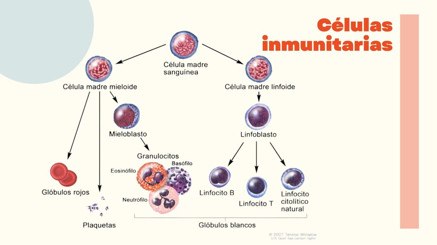
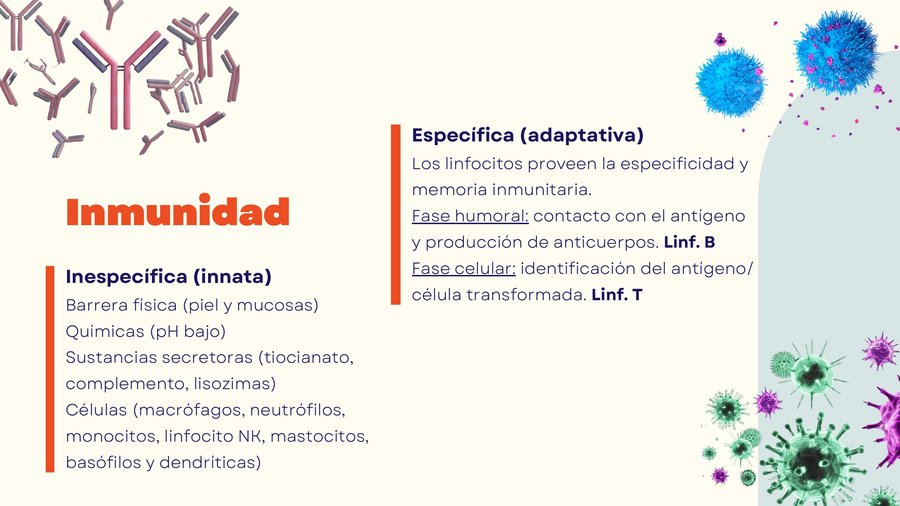
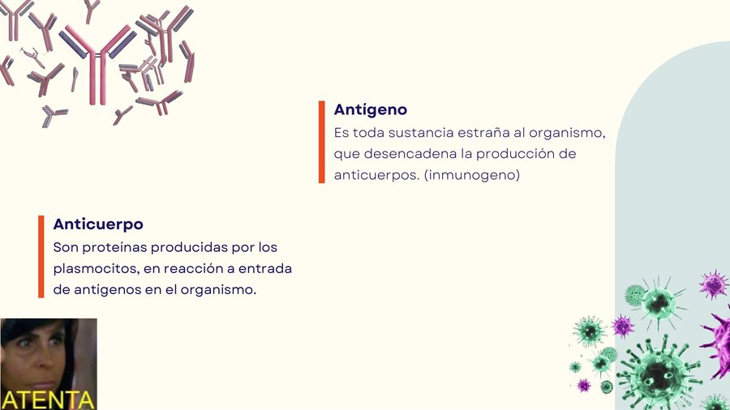
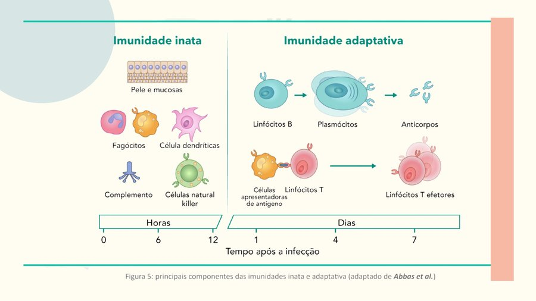
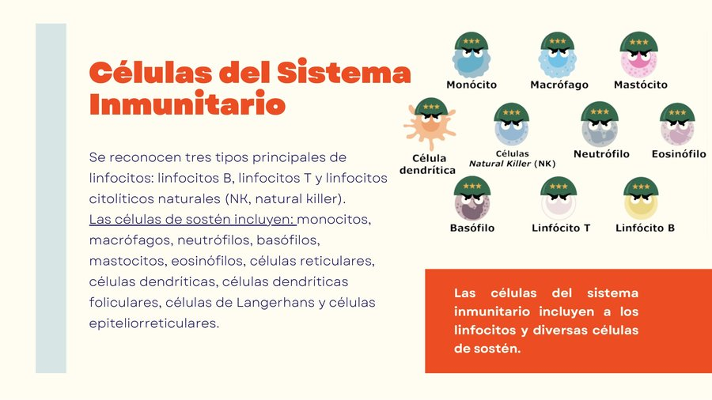
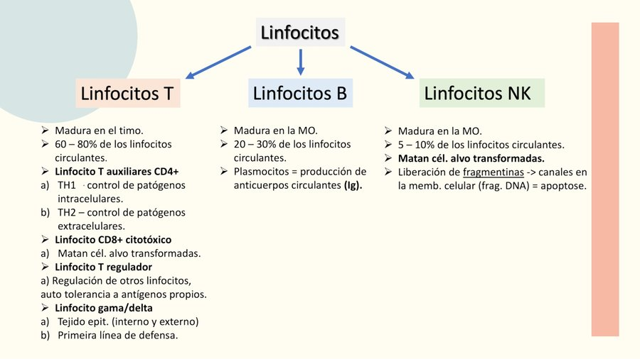
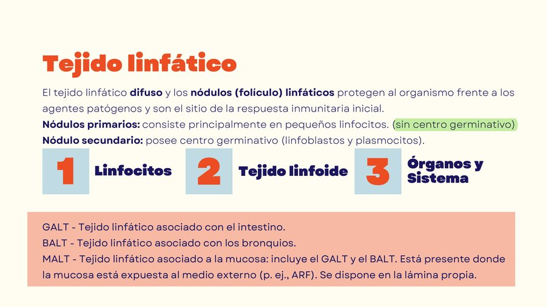
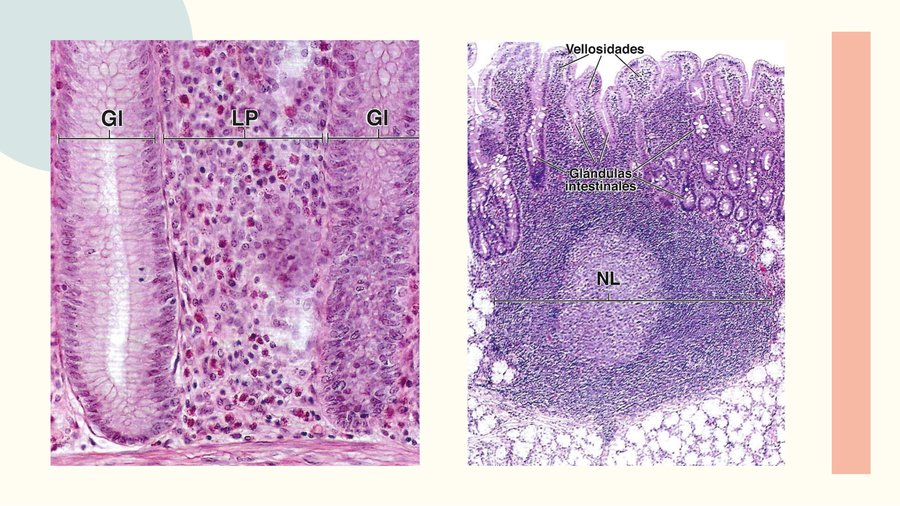
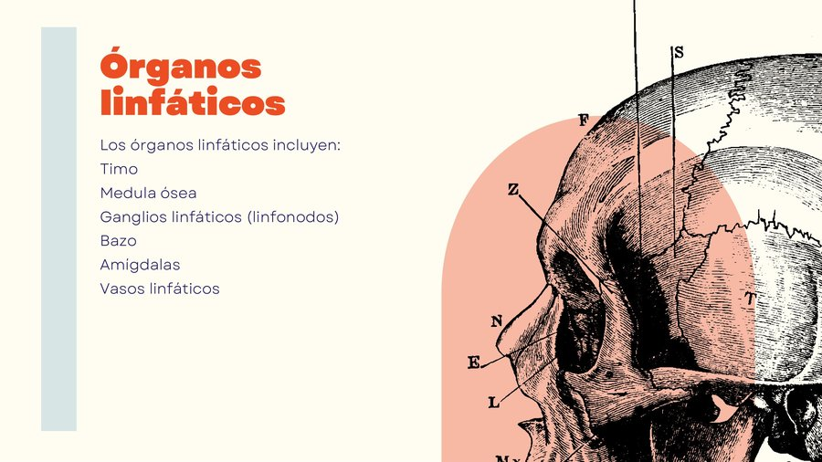
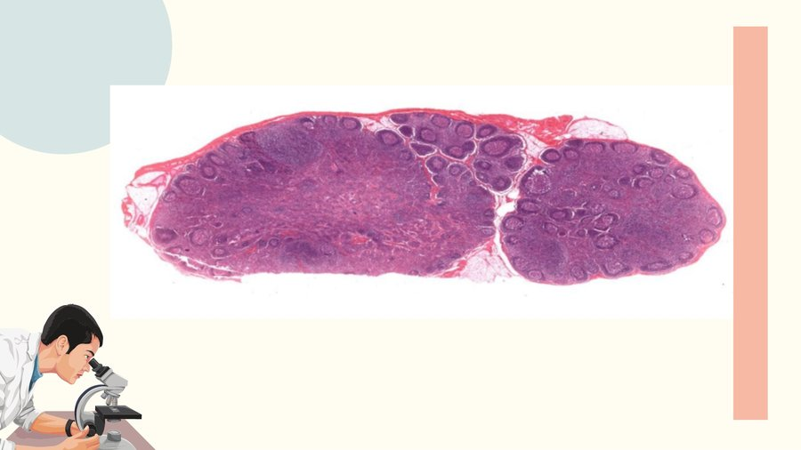
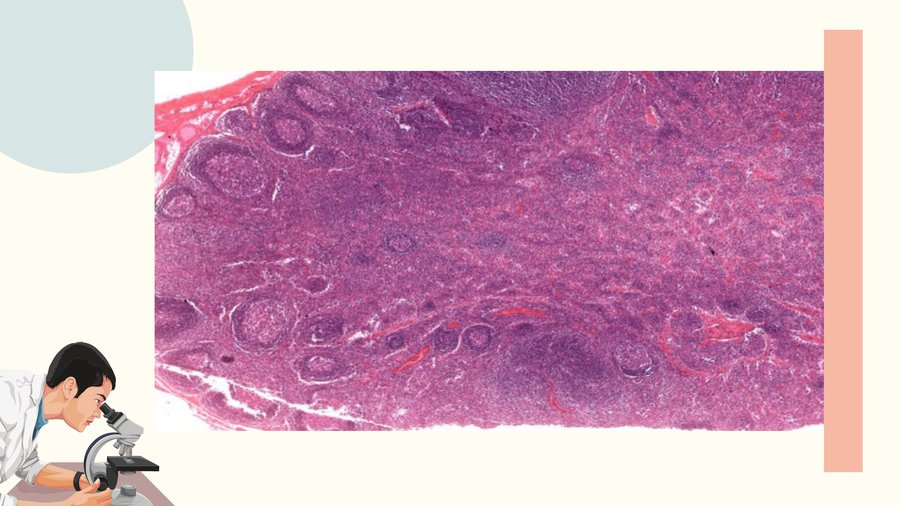
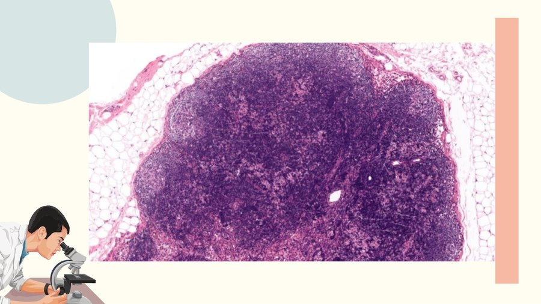
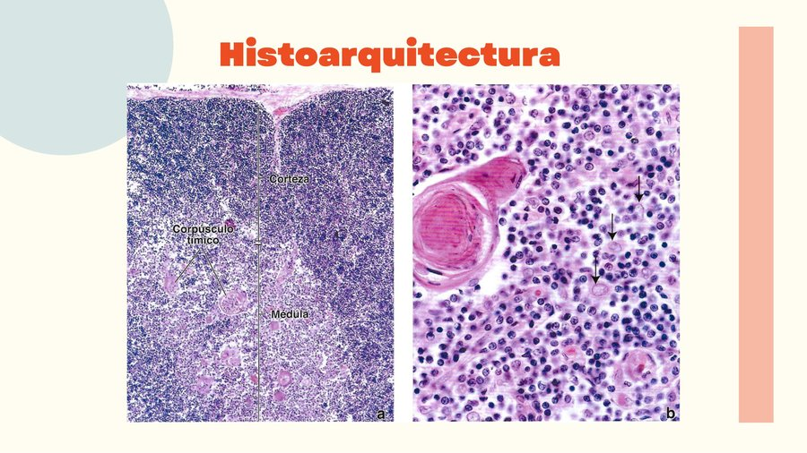
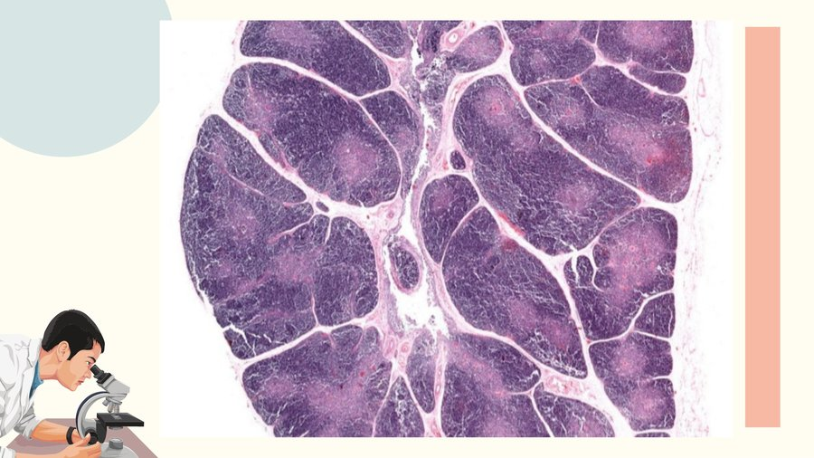
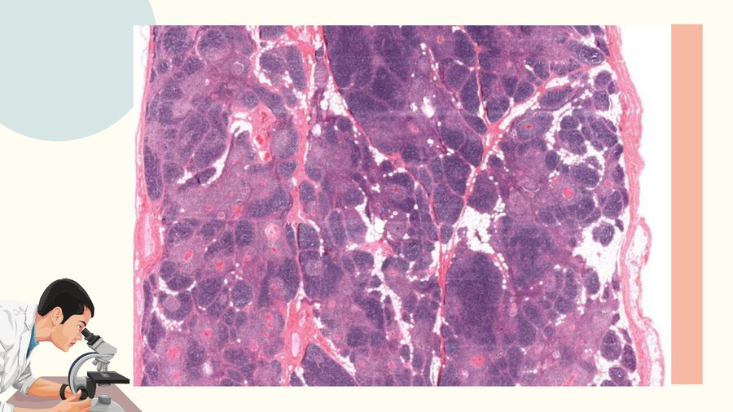
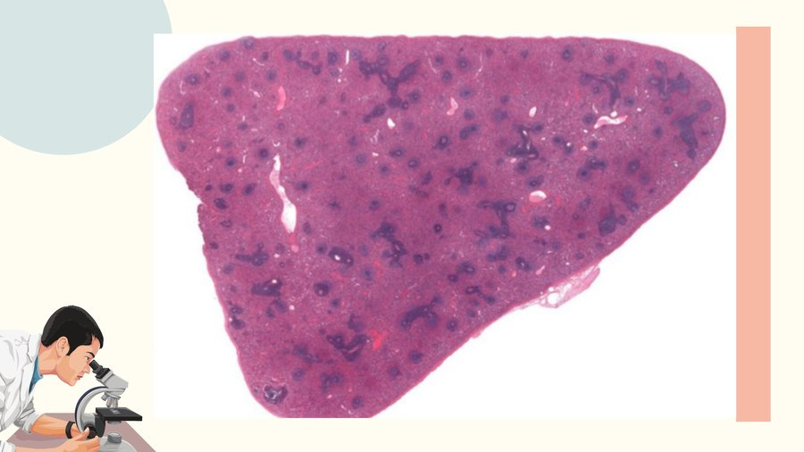
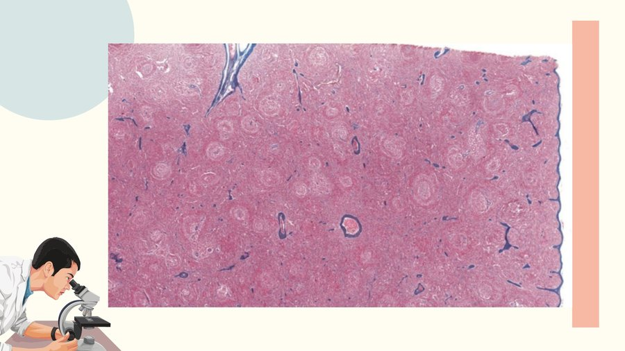
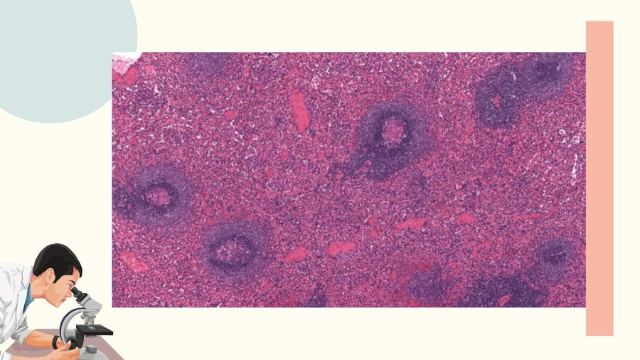
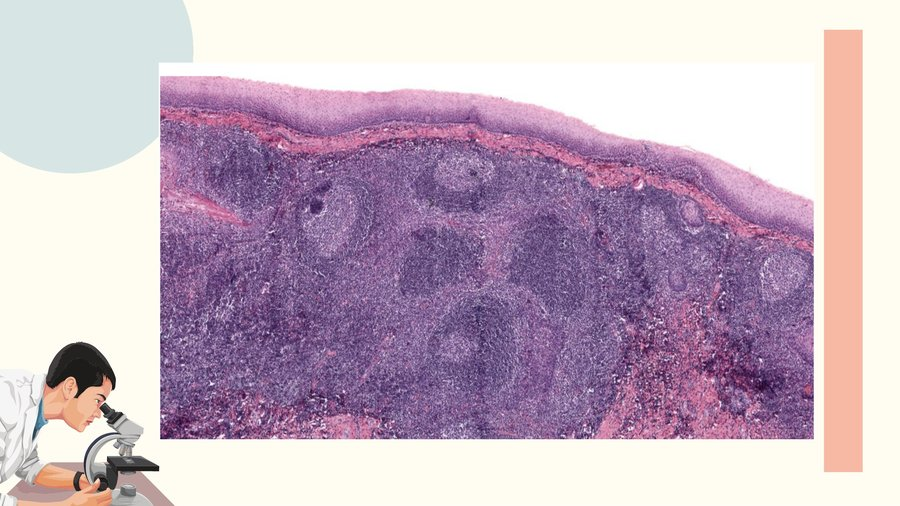
O sistema guarda, no seu navegador, quais cards você já sabe bem e quais precisam voltar mais cedo.
Questões objetivas, de identificação prática e de correlação clínica. Escolhe uma alternativa, depois clica em "Ver comentário completo".
Correção imediata, com feedback comentado no final.